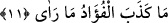

11. (Gözleriyle) gördüğünü, kalbi yalanlamadı.
Muhammed (a.s.)’ın kalbi gördüğünü yalanlamadı. Gözüyle gördüğü sûretin Cibrîl
(a.s.)’e âid olduğunda yanılmadı” şeklindedir. Yâni onun kalbi Cibrîl (a.s.)’ı
gördüğünde; “Seni tanımadım” demedi. Şâyet böyle deseydi yalancı olurdu. Rasûlullah
(s.a.) gözüyle Cibrîl’i gördüğü gibi kalbiyle de onu tanımıştır.
Bazı âlimler, bunun, “gözüyle gördüğü şeyde kalbi yalan söylemedi” anlamında
olduğunu söylemişler, şâyet Rasûlullah (s.a.) Cibrîl’e, “Ben seni tanımıyor ve sana
inanmıyorum” demiş olsaydı, o zaman kalbinin ona bu sözünü yalanlayacağını öne
sürmüşlerdir.
[67]. Heysemî, Mecmeu’z-Zevâîd, 6493.
[68]. Aclûnî, I, 147. ((İbnu’l-Esîr, Câmiu’l-usûl, c. 8, s. 556) (el-Mektebetü’ş-
Şâmile))
[69]. Münâvî, IV, 383.
[70]. Aclûnî, I, 237.
[71]. Buhârî, Savm, 20, 48, 49, 50; Müslim, Sıyâm, 57-58; Muvatta’, Sıyâm, 58;
Müsned, III, 8; VI, 126.
[72]. Zemahşerî, Fâik, II, 367.
[73]. Nesâî, İşretü’n-nisâ’, 1; Müsned, III, 128, 199, 285.
[74]. Tirmizî, Tefsîr (57); Müsned, II, 370.